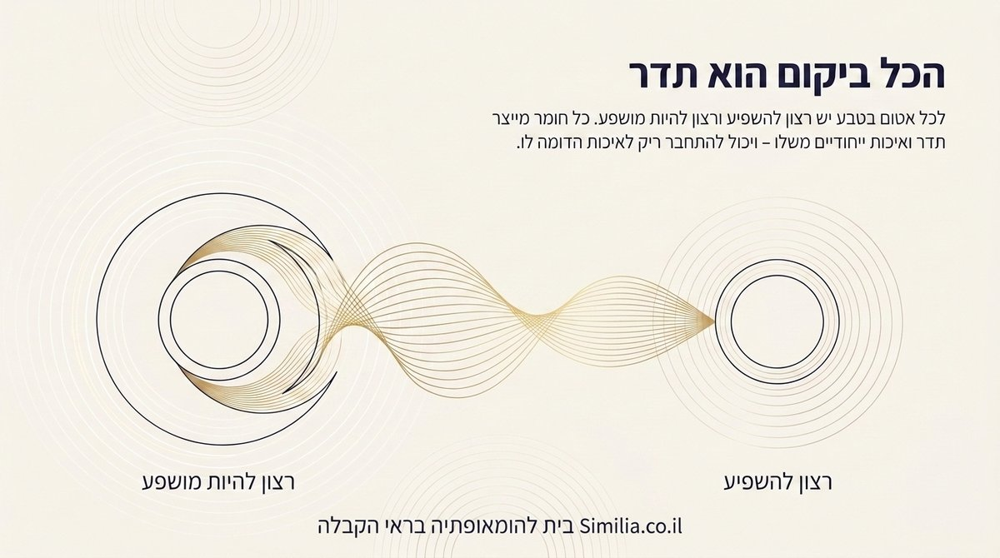
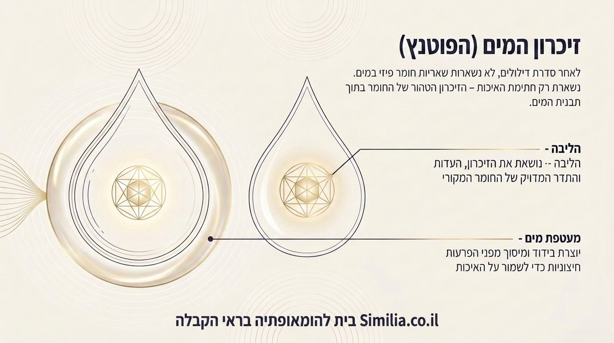
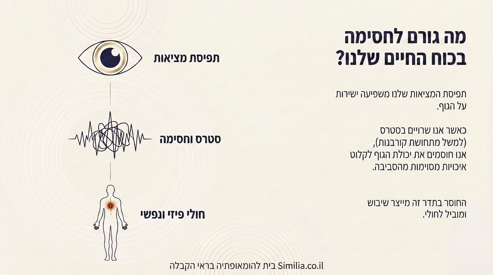
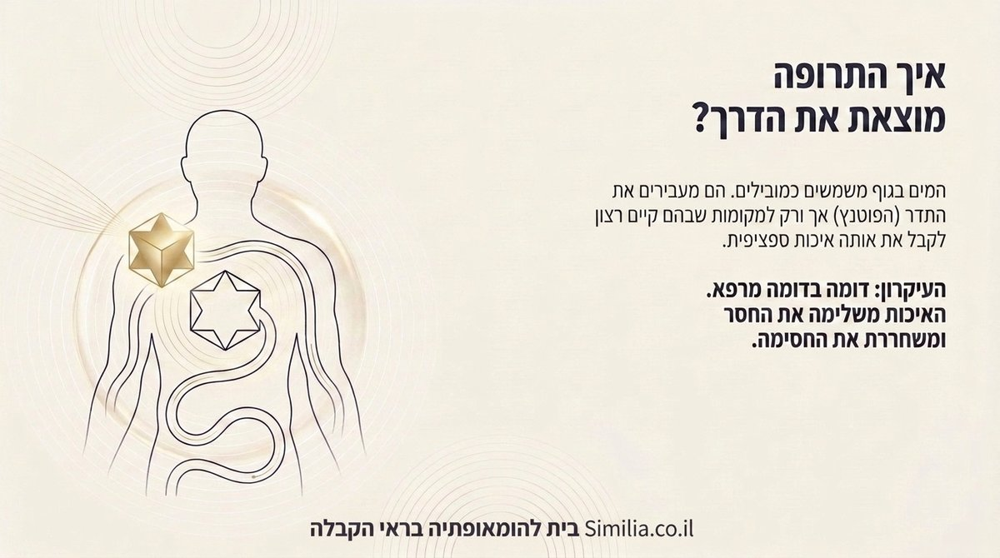
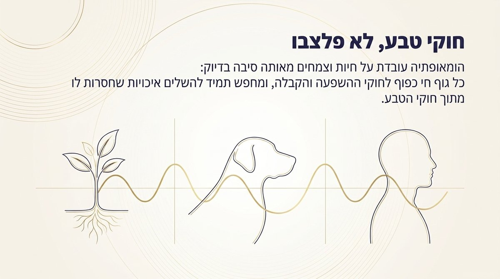
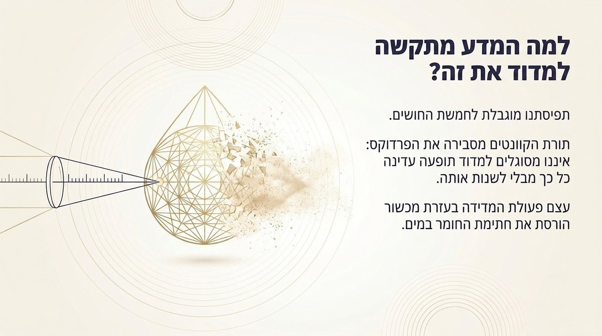
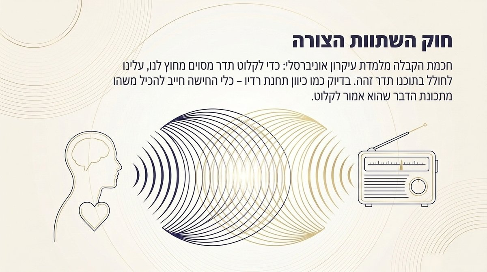
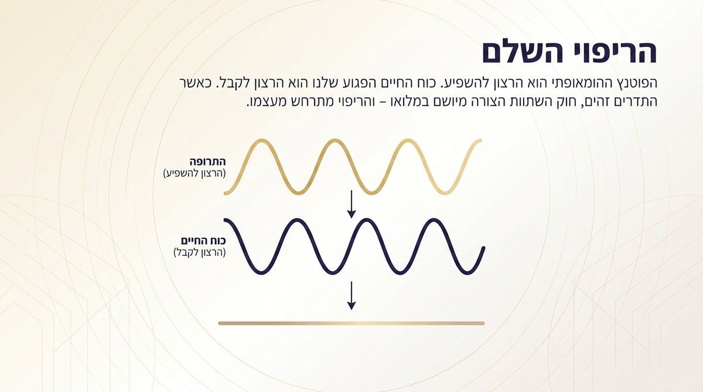
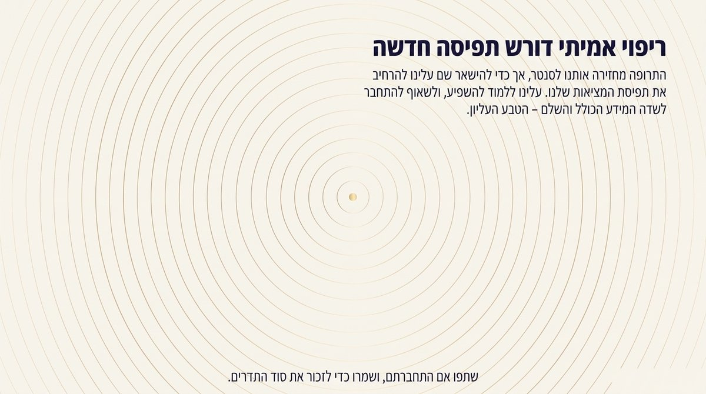

תרופה הומאופתית היא לרוב טיפה זעירה של מים ואלכוהול, שלאחר סדרת הדילולים שעברה כבר לא נותר בה שריד מדיד של החומר המקורי ממנו הוכנה. איך, בכל זאת, יכולה טיפה כזו לחולל שינוי אמיתי בגוף? התשובה אינה אמונה עיוורת - היא משלבת יחד תובנות מפיזיקה קוונטית, חוקי טבע אוניברסליים וחכמת קבלה עתיקה, שכולם, למרבה הפלא, מצביעים לאותו כיוון בדיוק.
הכל ביקום הוא תדר
בבסיס ההומאופתיה עומדת הנחה פשוטה ועמוקה: כל דבר ביקום - מהאטום הקטן ביותר ועד לגוף האדם השלם - הוא, במהותו, תדר. לכל חומר בטבע יש רצון להשפיע ורצון להיות מושפע, ולכל חומר תדר ואיכות ייחודיים משלו. שני תדרים יכולים "לדבר" ביניהם רק כאשר קיימת ביניהם קרבה, או דמיון של ממש.

זיכרון המים: מה זה בעצם "פוטנץ"?
כאשר תרופה הומאופתית עוברת סדרת דילולים חוזרים ונשנים, כמעט ולא נותר בה שריד פיזי מהחומר שממנו הוכנה. ולמרות זאת התרופה ממשיכה לפעול - ולעיתים אף בעוצמה רבה יותר ככל שהיא מדוללת יותר. ההסבר טמון במבנה של תבנית המים עצמה: שכבת ה"ליבה" הפנימית של אשכול המים נושאת את החתימה המדויקת, את הזיכרון, של החומר המקורי. סביבה עוטפת "מעטפת מים" שתפקידה לבודד ולמסך את הליבה מפני הפרעות חיצוניות, כדי שהאיכות הטהורה שנקלטה תישמר. מה שנשאר במבחנה, במילים אחרות, הוא לא החומר עצמו - אלא ההד שלו.

מה גורם לחסימה בכוח החיים שלנו?
אם התדר הנכון קיים תמיד סביבנו, מדוע איננו קולטים אותו כל הזמן? התשובה קשורה לאופן שבו אנו תופסים את המציאות. תפיסת המציאות שלנו משפיעה ישירות על הגוף הפיזי. כאשר אנו שרויים במתח או בסטרס - למשל מתוך תחושת קורבנות מתמשכת - אנו למעשה חוסמים את יכולת הגוף לקלוט איכויות מסוימות מהסביבה. חוסר ממושך בתדר הנחוץ הוא זה שמייצר את השיבוש, ובסופו של דבר מוביל לחולי, פיזי ונפשי כאחד.

איך התרופה מוצאת בדיוק את הדרך?
כאן נכנסים המים שבתוך גוף שלנו לתמונה. הם משמשים כמוליכים המעבירים את התדר, את הפוטנץ, לכל רחבי הגוף - אך הוא נקלט רק במקומות שבהם קיים רצון פנימי אמיתי לקבל בדיוק את אותה איכות ספציפית.

חוקי טבע, לא פלסבו
אילו ההשפעה הייתה רק תוצר של אמונה או של אפקט פלסבו, לא היינו מצפים לראות אותה גם אצל בעלי חיים וצמחים - שאין להם כל ציפייה מודעת מהטיפול. ובכל זאת, הומאופתיה פועלת גם עליהם, מאותה סיבה בדיוק: כל גוף חי, ללא יוצא מן הכלל, כפוף לאותם חוקי השפעה וקבלה, ותמיד מחפש להשלים מתוך הטבע איכויות שחסרות לו.

למה קשה כל כך למדוד את זה מדעית?
אם התופעה כה עקבית, מדוע קשה להוכיח אותה במעבדה? חלק מהתשובה נמצא בפיזיקה עצמה. תפיסתנו האנושית מוגבלת מטבעה לחמשת החושים, ותורת הקוונטים חושפת כאן פרדוקס מרתק: לעיתים איננו מסוגלים למדוד תופעה עדינה כל כך מבלי לשנות אותה. עצם הניסיון "לתפוס" את התדר באמצעות מכשור גס ומקובע עלול להרוס בדיוק את חתימת המים העדינה שהוא אמור לאתר.

חוק השתוות הצורה
חכמת הקבלה הקדימה בהרבה כל מכשיר מדידה מודרני, ולימדה כבר לפני מאות שנים עיקרון אוניברסלי: כדי לקלוט תדר מסוים שנמצא מחוצה לנו, עלינו לחולל בתוכנו תדר דומה לו. בדיוק כמו כיוון תחנת רדיו - כלי הקליטה חייב להכיל בתוכו משהו מתכונת האות שהוא אמור לקלוט, אחרת האות פשוט עובר לידו.

הריפוי השלם
וכך מתחברים כל החוטים למקום אחד. הפוטנץ ההומאופתי הוא, במהותו, "הרצון להשפיע". כוח החיים שלנו הוא "הרצון לקבל". ריפוי, אם כן, אינו מאבק כימי בין חומרים - הוא רגע של השתוות צורה: כאשר גלי הרצון להשפיע וגלי הרצון לקבל נעים באותו התדר בדיוק, מתרחש הריפוי.

ריפוי אמיתי דורש תפיסה חדשה
התרופה ההומאופתית יכולה להחזיר אותנו אל מרכז האיזון. אך כדי להישאר שם לאורך זמן, עלינו אנחנו עצמנו להרחיב את תפיסת המציאות שלנו: ללמוד גם להשפיע, ולא רק לקבל, ולשאוף להתחבר אל שדה המידע הכולל והשלם - זה שהקבלה מכנה הטבע העליון.

רוצים להבין את זה לעומק, לא רק להאמין?
בחוג השנתי של סימיליה לומדים את היסודות התיאורטיים והמעשיים של ההומאופתיה הקלאסית - ממטריה מדיקה ועד עקרונות הריפוי שמאחורי כל תרופה - צעד אחר צעד, עם ליווי אישי.
לפרטים על החוג השנתי